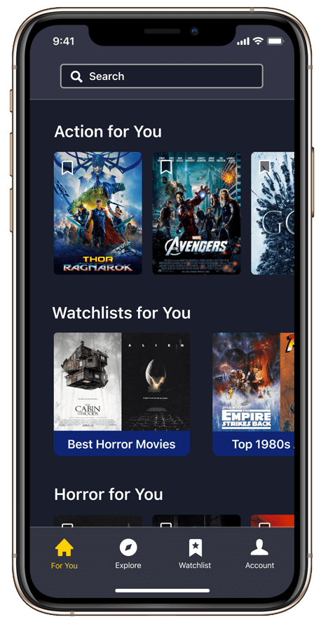
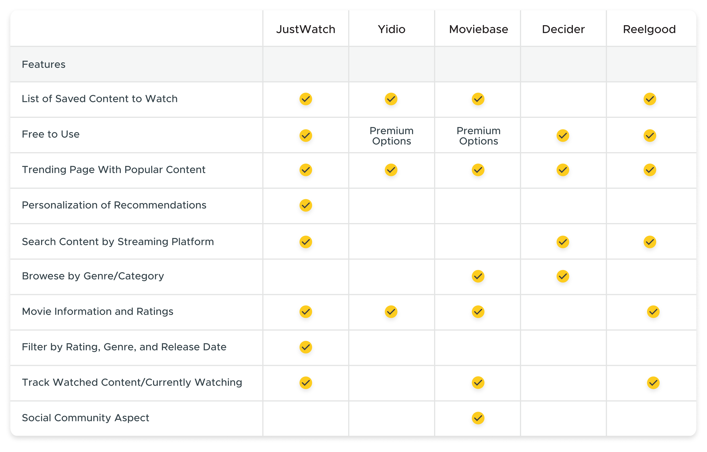
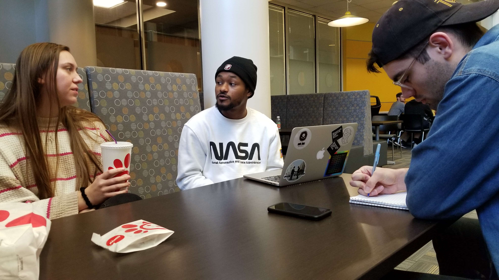
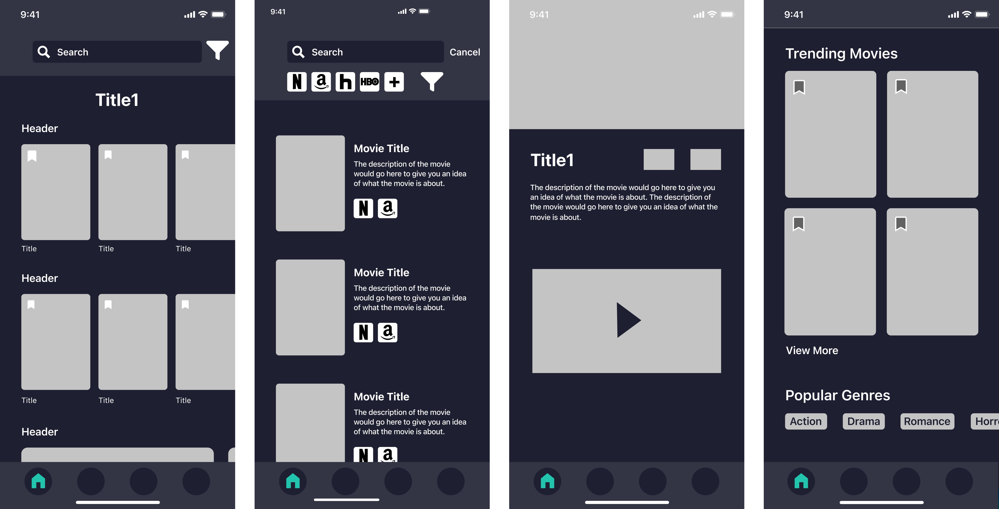
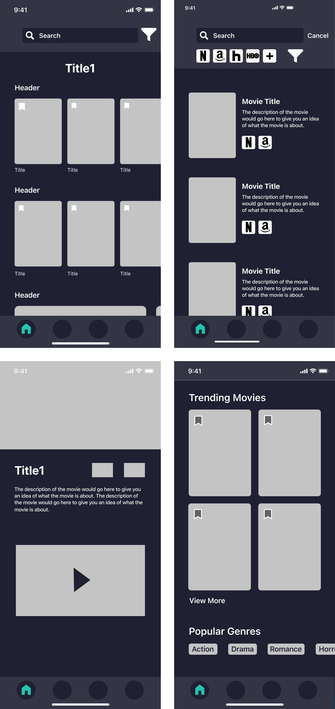
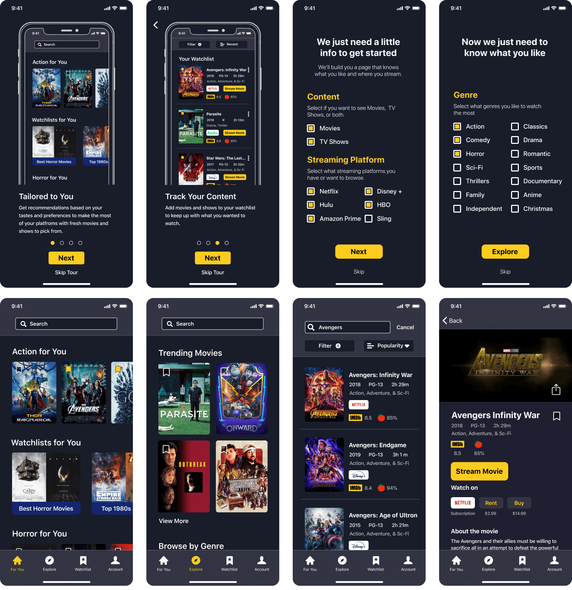
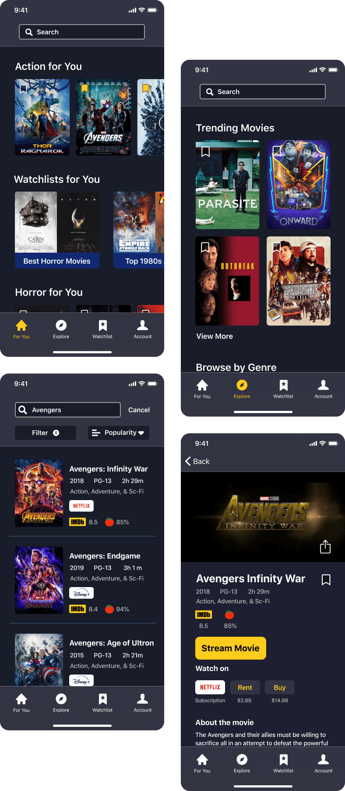

A streaming assistant to help search and discover content across platforms.
Spotter is an iOS mobile prototype aimed at assisting users to search for, discover, and track digital content to watch across various streaming services. Spotter was created alongside two other team members as a class project utilizing Goal-Directed Design. Spotter focuses on three main challenges derived from user interviews and research to keep the focus on user goals while addressing business needs.
Challenges
- Help users discover content to watch
- Simplify cross-platform content browsing
- Improve clarity of content entering and leaving platforms

Transforming the way users access multiple streaming platforms.
For my Interaction Design class I led a team of three to create the Spotter digital streaming assistant app. The team consisted of Cole Christiansen, Anthony Jones, and me. I was tasked with directing our team as we utilized the Goal-Directed Design process to design our app.
Having grown up in the information age, our team is familiar with the variety of streaming services offered and their shortcomings. I hypothesized that with the growing number of digital streaming platforms, users might have trouble finding content across various platforms. We aim to simplify and transform the way users interact with their preferred content platforms and minimize the frustrations of currently available solutions.
Understanding the domain, problem, and user with research.
We conducted research to establish an understanding of the potential domain, competitive technologies, and user goals/behaviors. We wanted to establish research that would allow us to create a solution that matches our user expectations, behaviors, and goals while aligning with business goals and requirements of our concept. This meant researching the domain, current technologies, and ultimately our users’ goals.
Targeted Information
- Become more informed on the domain
- Explore current technologies and views
- Understand our users’ behaviors and goals
Below is an overview of portions of the research stage, but for a more detailed look at our findings and process please view the research report.
Examining current market solutions and user reviews.
To gain a stronger understanding of competitor technology and user views on them, Cole and I completed a competitive audit. I browsed various streaming assistant apps before landing on the most popular and most developed solutions available on the Google Play Store, Apple App Store, and a web-only service. I noted features that were available within the app and what features were placed on the home screen. I also made note of which apps allowed customization based on the user's available platforms and preference in genres. Lastly, I used the search function to explore the ease of use and filtering options available.
Certain competitors stood out, but even they lacked key features.
We found that competing apps often offered standard features that would be expected, such as basic browsing and searching. However, many of these features were limited in their capabilities. The apps lack filtering in the search function and browsing. The search function only allows users to browse by titles. There was also a severe lack of personalization within the apps as the recommendations were generic to all users.

The Competitive Audit Feature Results
Gaining an understanding of our users.
To properly understand who our users are and what their goals are, we conducted five user interviews of college students around the age of 20. We interviewed a mix of students with three that regularly used multiple streaming services, while the other two only streamed content occasionally. This variety allowed for a unique insight into what made the enthusiasts different from the more casual user.
We had one moderator who asked the questions while myself and the other facilitator made notes and asked the participant to clarify any important details or ask questions about their answers.

An interview Session
Convenience of using multiple platforms was the largest pain point:
The main pain points for our primary users revolved around browsing their various platforms to find new content to watch. When looking for something to watch they would scroll through one platform's catalog before the next, assuming they found nothing. This would often take a few minutes before either finding something new to watch or settling for their favorite TV show.
Sample questions from the interviews:
- What does your day look like after you finish school, work, or any responsibilities?
- What are some things that interest you?
- Describe how you find new forms of entertainment.
- Where do you normally watch or stream TV/Movies?
Discoveries from interviews:
- Most of those interviewed had access to multiple streaming platforms.
- Of those who regularly watched content, they would browse aimlessly before watching something.
- When they could not find something to watch most would settle and watch their favorite show or movie.
- The more avid watchers would browse between multiple platforms before deciding.
Modeling the interview data into personas.
Based on our interviews we had a clear primary persona to target our solutions towards. Our primary user is someone who regularly watches a variety of content across various streaming platforms. They often browse through the catalogs in the hope of finding something new and exciting. However, they often look for content that matches their tastes and preferences.
Primary User Goals:
- Make the most of their limited free time.
- Discover new movies and shows across their various platforms.
- Feel accomplished that he made the most of their day.
- Be entertained during their free time.


Defining the app's requirements.
To establish the app's requirements we put ourselves into our user's shoes with context scenarios. These scenarios included the environment, amount of time available, and potential distractions involved when the user would use the app. From these scenarios, we established the requirements which are what the app will do at a higher level.
The main requirements revolve around allowing the primary user, Jake, to quickly discover new content to watch based on their preferences. This includes user-specific recommendations and quick access to searches across platform databases. The ultimate goal is to allow Jake to quickly browse content and watch a show or movie.
Primary Requirements
- Recommendation of content personalized to the user and their tastes.
- Easily sift through the large amount of content across platforms.
- Easily display cross-platform information in a digestible way.
- Keep track of content entering and leaving platforms.
Designing the framework and flow of the screens.
This is a stage that benefits from meeting in person and creating designs quickly with many revisions. Unfortunately, due to the events of COVID-19, we had to reconsider how we would continue the project. I led the team during the wireframing stage utilizing digital platforms as my whiteboard.
I focused the design around a few main concepts to keep the solution focused on our users' goals. I wanted to make sure that we were delivering both a unique experience and an expected one. I wanted to create design solutions that prioritized customization and ease of use when discovering/searching for content while not overwhelming the user with unnecessary information. Our primary user, Jake, wants to make the most of his time and gets frustrated when he is stuck scrolling through his various platforms to find something to watch. The user already has access to a large amount of information, the goal is to make the sifting through that information easier.
We focused on three main concepts:
- Discover new content: I wanted to present content custom-tailored to the user's taste in movies and genres on the home screen to allow for quick browsing. I want the user to be able to easily discover something new to watch without spending much time.
- Cross-platform browsing: I wanted a simple way of searching for a movie across all the user's streaming platforms. This includes the suggested content and search interaction being filtered by the user to only show content they have access to.
- Clarity of content: I wanted to offer the user a way to save movies to a list so they could track the content they want to watch. I wanted it to be clear what content they can watch on their platforms and allow them to know when it is leaving the platform.
A sample of a few detailed screen wireframe sketches
Refining and turning the design into a prototype.
I took the sketches and began converting them into the digital workspace. Being able to mirror the design onto a mobile phone allowed me to view the design in the context of how the user would see it. The overall focus was on balancing the content to keep it from overwhelming the user. Having a general layout allowed us to play with options such as button and icon design in addition to their placement.
Due to COVID-19 we were unable to conduct a low-fidelity in-person usability test session. However, we conducted a cognitive walkthrough to consider the intended flows, interactions, and overall layout of the screens. There were minor changes made here such as the content displayed on the home screen and icon placement on the movie information screens. We waited until we had a higher fidelity prototype to test the design with users.


Low-fidelity digital screens
Creating the high-fidelity prototype.
We started by defining the visual language of the app to create a design system to work from. Overall we wanted a design that was casual and geared towards dark environments.
I had the other team members work on the visual elements while I worked on creating the high-fidelity prototype including the layout and interactions. It was during this stage that tweaks were made to the design to simplify elements and rearrange content to make it more easily digestible.
Usability Testing to refine the design.
Due to COVID-19, we were only able to conduct our testing in a virtual setting. In total, I conducted three rounds of usability testing with three fellow students. Despite this, we still used these tests to better refine our design as they offered great insight. Various minor interactions were missing or did not work as expected, including filtering the search results. Additionally, the personalized homepage was not immediately clear to the user.
Addressing areas of concern:
- The homepage content was not clear it was personalized in terms of the category headers. I renamed the headers to show they were specific to the user and changed the icon name to "For You" to be even more clear. I also reworked the onboarding and homepage name to make it more clear that the content is personalized to the user.
- Some search filtering options were missing such as genre and selecting platforms in the search filter was confusing to some users. I added the missing filters and redesigned the selection process to have the platform colored when selected and grayscale when deselected.
- Some users did not like the lack of ability to mark content as watched after placing a movie or show in the watchlist screen. To give the ability to keep items in a saved list but separate from content to be watched, I added a "mark as seen" interaction within the same page.
- The lack of a search bar on the explore page confused users as they expected it to be there in addition to the home screen. I added the same style search navigation to the top of the explore page.

How we addressed the challenges and the final design.
Throughout the design process we focused on three challenges. We established these to be the three primary pillars of both what users wanted as well as a means of pushing our product above the others based on our interviews and research.
Focusing on these pillars allowed us to tackle the challenges in order from large to small to ensure we met all the expectations and requirements. Below is a breakdown of the three primary challenges.
Challenge 1:
Discover New Content
The biggest pain point for the user was deciding what to watch. We wanted to provide quick bite-size content that users can explore based on their preferences that include content from all their platforms. The home page delivers all content based on user-defined preferences to minimize the time needed scrolling to find something to watch.
Limiting the content on the home screen allows for quick browsing of content that the user most likely will enjoy. If the user wishes to view content beyond their taste, the Explore page offers trending content and genres beyond their favorites.
Challenge 2:
Cross-Platform Browsing
We added filtering by streaming platform to the For You and Explore pages to only show content from platforms that the user selects. We wanted to minimize the time needed to browse content by displaying cross-platform content in one location.
The search feature allows the user to search for specific titles and genres. They can filter and sort results even further to better find what they want or discover where they can watch it if they do not have access to the platform.
Challenge 3:
Clarity of Content
We wanted to ensure that there was clarity as to what content users have access to. Curated content is displayed based on the user's preferences and icons are displayed on the movie detail screens to show what platform the movie or show is on.
For content saved to the watchlist, there is an icon on the main screen alongside a stream movie button that links directly to the corresponding app. Additionally, the watchlist will send push notifications when a movie or show is leaving the platform to allow the user to be sure they make the most of their platforms.
Additional screens from the final design.


My takeaways from this project.
It is important to be open to being wrong about your assumptions. Although our hypothesis assumed the biggest paint point and use case would revolve around searching to discover where to find content, that was not the case. Researching and interviewing the user allowed us to discover the primary goals of our users to better design a solution for them.
Things don't always go to plan. COVID-19 shook things up as we moved into the design stages. Although there are powerful digital solutions, they don't operate identically to traditional methods. Better testing methods would need to be explored if virtual tests need to be conducted in the future. Especially in terms of reaching out to users to gain feedback from.